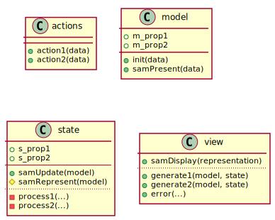
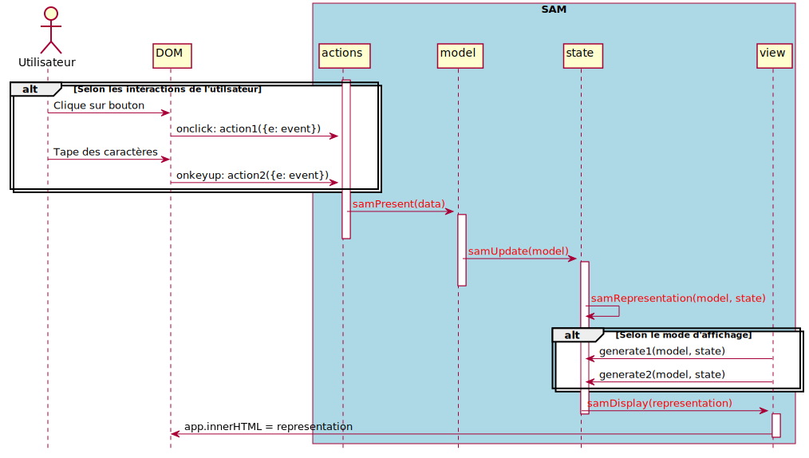

Architectures logicielles pour les applications Web
Contexte
On peut définir une application Web comme une application dont l’interface utilisateur s’affiche dans un navigateur Web.
Une application Web résulte le plus souvent du dialogue entre une partie client (le navigateur) et une partie serveur (exécutée à distance).
Dans ce cours, nous nous focaliserons sur la partie client avec des applications tournant principalement dans le navigateur.
Nécessité d’une bonne organisation logicielle
La gestion de l’interface graphique d’une application est délicate car elle gère des données de natures différentes :
- Les données propres à l’application
- une liste d’articles avec images, catégorie, et prix associés pour un site d’e-commerce par exemple.
- Les données propres à l’état courant de l’application
- une liste d’articles filtrés suivant des critères de l’utilisateur par exemple
- Les données propres à l’état de l’interface
- certains boutons indisponibles pour un état particulier
Et doit modifier ces données en fonction des interactions de l’utilisateur.
La difficulté réside dans la conservation de la cohérence de toutes ces données.
Multitude d’infrastructures logicielles Javascript disponibles
De nombreuses infrastructures logicielles (frameworks) sont disponibles pour aider le développeur à structurer son application.
Elles proposent une méthode et des composant pour faciliter l’organisation du code et la gestion de l’état de l’application.
Les plus connues sont : React.js (Facebook), Angular.js (Google), Vuejs et tant d’autres…
Malgré leurs avantages, chacun de ces infrastructures ont tendance à enfermer le développeur dans un carcan rigide et de lui imposer des contraintes supplémentaires.
Nous verrons qu’il est possible de se passer de telles infrastructures par une simple organisation du code en plusieurs composants dont nous définirons le rôle. Nous adopterons pour cela l’architecture SAM.
Architecture SAM
Introduction
L’architecture SAM (ou SAM Pattern en anglais) est une organisation du code particulièrement pensée pour le développment d’applications Web.
Elle a été initialement proposée par Jean-Jacques Dubray en 2016.
Les principes de son approche sont exposés sur http://sam.js.org
Il ne s’agit pas d’une infrastructure logicielle (ou framework), mais d’une structuration du code à appliquer lors de l’implémentation de l’application (design pattern en anglais).
Le nom SAM vient des premières lettres de 3 des 4 composants constituant l’architecture proposée : State, Action, Model et View.
Principes de l’architecture SAM
Architecture constituée de 4 composants :
- Actions – pour réagir aux intéractions de l’utilisateur
- Model – qui centralise les données essentielles
- State – état et représentation de l’application
- View – qui fabrique et affiche l’interface Web
Propriétés remarquables :
- Model est la seule source d’informations nécessaires à l’application
- View régénère entièrement l’interface à chaque changement du modèle
Principes de l’architecture SAM
Ces composants sont implémentés en Javascript par des objets littéraux (actions, model, state et view).
Ces objets contiennent des méthodes de base :

Méthodes de base des objets de l’architecture SAM
Séquence d’appels des méthodes SAM

Enchainement des méthodes dans l’architecture SAM
Canevas Javascript de l’architecture SAM
actions = { //---------- ACTIONS ---
action1(data) {
model.samPresent(
{do:'change_p1', p1: data.p1});
},
};
model = { //-------------- MODEL ---
p1: '',
//... autres propriétés
samPresent(data) {
switch (data.do) {
case 'change_p1':
this.p1 = data.p1;
break;
}
state.samUpdate(this);
}
};
state = { //---------------------------- STATE ---
//... propriétés
samUpdate(model) {
//...
this.samRepresent(model);
},
samRepresent(model) {
let representation = view.generate1(model,this);
view.samDisplay(representation);
}
}
view = { //------------------------------ VIEW ---
samDisplay(representation) {
getElementById('app').innerHTML = representation;
},
generate1(model, state) {
return /* code HTML */ },
}
Illustration des composants SAM sur un exemple
Nous allons illustrer l’implémentation de l’architecture SAM avec l’exemple de l’affichage d’une liste de départements selon plusieurs modes de représentation (sous forme d’une liste à puces ou d’un tableau), tel que traité dans le TD3.

Actions – pour réagir aux intéractions de l’utilisateur
L’objet actions regroupe les
méthodes associées aux événements déclenchés par l’intéraction de l’utilisateur avec l’interface graphique.
Chaque méthode d’action prend un objet de données (data) contenant les éléments
nécessaires à caractériser la nature de l’interaction et construit un nouvel objet de données à présenter à
model.
<select onchange="actions.changeMode({e:event})" > <!-- on passe l'événement en argument -->
<option value="asList" > Liste </option>
<option value="asTable"> Tableau </option>
</select>
actions = {
changeMode(data) {
let selectedMode = data.e.target.value; // d'où on récupère la valeur du mode sélectionné
model.samPresent({do:'changeMode', mode: selectedMode}); // on présente ce mode à model
},
//...
};
Model – centralise les données essentielles
L’objet model contient les
données essentielles au fonctionnement de l’application. Seule la méthode samPresent(data) peut les modifier
en fonction des propositions reçues en argument.
changeMode(data) { // une action de l'objet actions
//...
model.samPresent({do:'changeMode', mode: selectedMode}); // on construit un objet de données
} // indiquant ce qu'on veut modifier dans le modèle
model = {
departments: [], // tableau contenant les données sur les départements
mode: '', // mode d'affichage : 'asList' ou 'asTable'
samPresent(data) { // reçoit des propositions de changement dans data
switch( data.do ) {
case 'changeMode': this.mode = data.mode; break;
}
state.samUpdate(this); // comme le modèle a changé, on demande à l'état de l'application
} // (state) de se mettre à jour
};
State – état et représentation de l’application
L’objet state met à jour avec
samUpdate(model)
l”état dans lequel se trouve l’application.
Il en déduit la représentation qui convient à cet état.
Il appelle enfin l”affichage de cette nouvelle représentation.
state = {
//...
samUpdate(model) { // déduit l'état courant de l'application
//... // des propriétés de model
this.samRepresent(model);
},
samRepresent(model) { // construit la représentation correspondant à cet état
let representation;
switch (model.mode) {
case "asList": representation = view.asList (model, this); break; // comme liste HTML
case "asTable": representation = view.asTable(model, this); break; // comme tableau HTML
}
view.samDisplay(representation); // view affiche la représentation HTML générée
}
}
View – fabrication et affichage de l’interface Web
L’objet view va générer toutes
les portions de code HTML qui constituront l’interface de l’application. Il affichera la représentation
assemblée par state dans le
document Web.
<div id="app"> </div> <!-- dans le document Web -->
view = {
samDisplay(representation) {
const appElt = document.getElementById('app');
appElt.innerHTML = representation; // injecte le code HTML généré dans le document Web
},
asList(model, state) { // représente les départements sous forme d'une liste HTML
return `
<ul>
${model.departments.map((v) => `<li><b>${v[0]}</b> (${v[2]})</li>`).join('')}
</ul>`;
},
}
SAM et la complexification d’une application
L’architecture SAM permet de bien gérer l’ajout de nouvelles fonctionnalités dans l’application grâce au rôle clair de chaque composant.
Nous allons illustrer cette facilité en ajoutant le filtrage de la liste des départements du TD3.
Il s’agit ici de ne garder que les départements dont le nom contient une chaîne de caractères tapée par l’utilisateur.
Voici les étapes à suivre :
- ajouter une action pour récupérer la chaîne de caractères quand le filtre change ;
- stocker ce nouveau filtre dans
model; - mettre à jour la liste des départements filtrés dans
state; - afficher la liste filtrée plutôt que la liste de tous les départements.
Actions – récupérer le filtre quand il a changé
On crée une méthode actions.filter() qui est exécutée à
chaque nouveau caractère tapé dans le champ texte.
Cette méthode récupère la valeur du champ texte et la présente à model comme nouveau filtre.
<span>Filtre</span>
<input onkeyup="actions.filter({e: event})" />
actions = {
//...
filter(data) {
let filterValue = data.e.target.value;
model.samPresent({do:'changeFilter', filter: filterValue});
},
//...
};
Model – stocke ce nouveau filtre
filter(data) {
//...
model.samPresent({do:'changeFilter', filter: filterValue}); // on construit un objet de données
} // indiquant ce qu'on veut modifier dans le modèle
.. code-block::
model = {
departments: [], // tableau contenant les données sur les départements
depFilter: '', // filtre à appliquer aux données sur les départements
//...
samPresent(data) { // reçoit des propositions de changement dans data
switch( data.do ) {
case 'changeMode' : this.mode = data.mode; break;
case 'changeFilter': this.depFilter = data.filter; break;
}
state.samUpdate(this); // comme le modèle a changé, on demande à l'état de l'application
} // (state) de se mettre à jour
};
State – mettre à jour la liste des départements filtrés
state = {
currentFilter: undefined, // le filtre courant appliqué à departments
depFiltered: [], // version filtrée de departments
samUpdate(model) {
if (this.currentFilter !== model.depFilter) { // si le filtre a changé
this.currentFilter = model.depFilter;
this.depFiltered = this.filterDepartments(model.departments); // recalcule la liste
}
this.samRepresent(model);
},
filterDepartments(depArray) {
if (this.currentFilter == '') return depArray;
return depArray.filter(v => v[0].toLowerCase().includes(this.currentFilter.toLowerCase()) );
}
}
View – afficher la liste filtrée
La seule modification par rapport à la version précédente est l’affichage du tableau filtré state.depFiltered à la place du
tableau complet de départements model.departments.
<div id="app"> </div> <!-- dans le document Web -->
view = {
samDisplay(representation) {
const appElt = document.getElementById('app');
appElt.innerHTML = representation; // injecte le code HTML généré dans le document Web
},
asList(model, state) { // représente les départements filtrés sous forme d'une liste HTML
return `
<ul>
${state.depFiltered.map((v) => `<li><b>${v[0]}</b> (${v[2]})</li>`).join('')}
</ul>`;
},
}
Conclusion
L’architecture SAM structure clairement une application Web.
Elle est constituée de 4 objets distincts :
actions- pour réagir aux intéractions de l’utilisateurmodel- qui centralise les données essentiellesstate- état et représentation de l’applicationview- qui fabrique et affiche l’interface Web
SAM permet d’ajouter facilement des fonctionnalités à l’application.